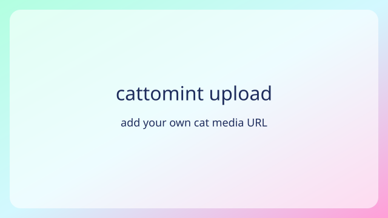

No uploads yet
Head to the admin panel to add cat videos and images.

Add a featured video or image from the admin panel to spotlight your favorite feline moments.
Head to the admin panel to add cat videos and images.
Share your desktop wallpapers, glitter GIFs, and ringtone edits. Cattomint fans keep it classic.